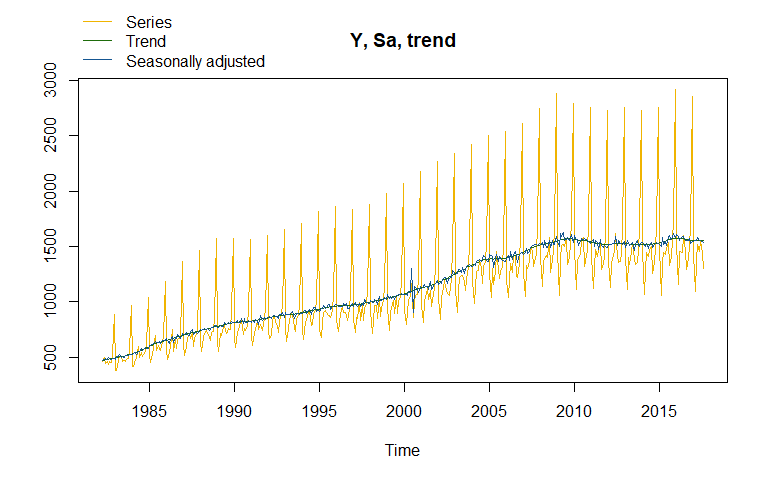

rjd3tramoseats offers full acces to options and outputs of TRAMO-SEATS (rjd3tramoseats::tramoseats()), including TRAMO modelling (rjd3tramoseats::tramo()) and SEATS decomposition (rjd3tramoseats::seats_decompose()).
A specification can be created with the functions rjd3tramoseats::tramo_spec() or rjd3tramoseats::tramoseats_spec() and can be modified with the function:
for pre-processing:
rjd3toolkit::set_arima(),rjd3toolkit::set_automodel(),rjd3toolkit::set_basic(),rjd3toolkit::set_easter(),rjd3toolkit::set_estimate(),rjd3toolkit::set_outlier(),rjd3toolkit::set_tradingdays(),rjd3toolkit::set_transform(),rjd3toolkit::add_outlier(),rjd3toolkit::remove_outlier(),rjd3toolkit::add_ramp(),rjd3toolkit::remove_ramp(),rjd3toolkit::add_usrdefvar();for decomposition:
rjd3tramoseats::set_seats();for benchmarking:
rjd3toolkit::set_benchmarking().
Installation
To get the current stable version (from the latest release):
# install.packages("remotes")
remotes::install_github("rjdemetra/rjd3toolkit@*release")
remotes::install_github("rjdemetra/rjd3tramoseats@*release")To get the current development version from GitHub:
# Install development version from GitHub
# install.packages("remotes")
remotes::install_github("rjdemetra/rjd3tramoseats")Usage
library("rjd3tramoseats")
y <- rjd3toolkit::ABS$X0.2.09.10.M
ts_model <- tramoseats(y)
summary(ts_model$result$preprocessing) # Summary of tramo model
#> Log-transformation: yes
#> SARIMA model: (0,1,1) (0,1,1)
#>
#> Coefficients
#> Estimate Std. Error T-stat Pr(>|t|)
#> theta(1) -0.82783 0.02571 -32.196 < 2e-16 ***
#> btheta(1) -0.42554 0.06388 -6.661 9.01e-11 ***
#> ---
#> Signif. codes: 0 '***' 0.001 '**' 0.01 '*' 0.05 '.' 0.1 ' ' 1
#>
#> Regression model:
#> Estimate Std. Error T-stat Pr(>|t|)
#> monday -0.0109446 0.0034805 -3.145 0.001788 **
#> tuesday 0.0048940 0.0035307 1.386 0.166479
#> wednesday 0.0001761 0.0034970 0.050 0.959867
#> thursday 0.0132928 0.0035330 3.763 0.000193 ***
#> friday -0.0024801 0.0035383 -0.701 0.483747
#> saturday 0.0153509 0.0035171 4.365 1.62e-05 ***
#> lp 0.0410667 0.0101178 4.059 5.93e-05 ***
#> easter 0.0503888 0.0072698 6.931 1.68e-11 ***
#> AO (2000-06-01) 0.1681662 0.0299743 5.610 3.78e-08 ***
#> AO (2000-07-01) -0.1972348 0.0298664 -6.604 1.28e-10 ***
#> ---
#> Signif. codes: 0 '***' 0.001 '**' 0.01 '*' 0.05 '.' 0.1 ' ' 1
#> Number of observations: 425 , Number of effective observations: 412 , Number of parameters: 13
#> Loglikelihood: 781.358, Adjusted loglikelihood: -2086.269
#> Standard error of the regression (ML estimate): 0.03615788
#> AIC: 4198.538 , AICc: 4199.452 , BIC: 4250.811
plot(ts_model) # Plot of the final decomposition
To get the final components you can use the function rjd3toolkit::sa_decomposition():
rjd3toolkit::sa_decomposition(ts_model)
#> Last values
#> series sa trend seas irr
#> Sep 2016 1393.5 1552.616 1561.206 0.8975174 0.9944979
#> Oct 2016 1497.4 1568.366 1559.217 0.9547514 1.0058681
#> Nov 2016 1684.3 1528.962 1557.382 1.1015974 0.9817508
#> Dec 2016 2850.4 1542.997 1556.132 1.8473143 0.9915588
#> Jan 2017 1428.5 1545.950 1555.502 0.9240275 0.9938587
#> Feb 2017 1092.4 1551.369 1555.210 0.7041521 0.9975303
#> Mar 2017 1370.3 1553.207 1555.087 0.8822391 0.9987913
#> Apr 2017 1522.6 1580.752 1554.759 0.9632123 1.0167187
#> May 2017 1452.4 1554.517 1553.908 0.9343093 1.0003924
#> Jun 2017 1557.2 1551.804 1552.778 1.0034774 0.9993726
#> Jul 2017 1445.5 1544.701 1551.717 0.9357801 0.9954781
#> Aug 2017 1303.1 1535.588 1550.949 0.8485999 0.9900960